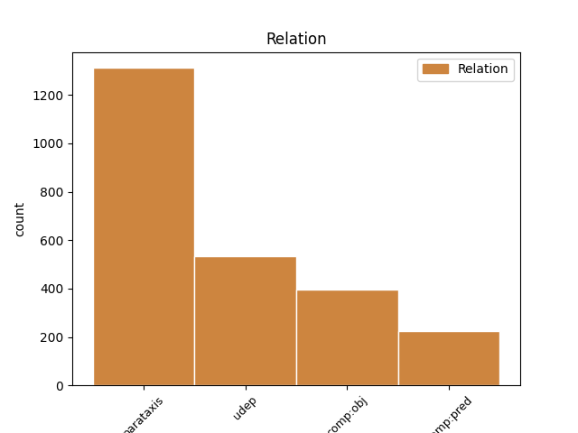
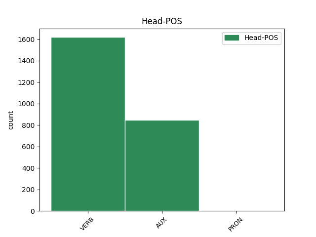
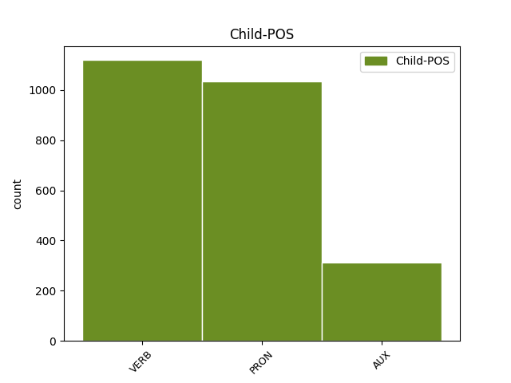

Distribution of features within this leaf



Agreement Rules sorted by frequency.
- When the dependent token is the parataxis(parataxis) of the head token, and the head token is VERB
1 Kuigi _ _ _ _ 0 _ _ _
2 kapitali _ _ _ _ 0 _ _ _
3 sissevoolu _ _ _ _ 0 _ _ _
4 mõju _ _ _ _ 0 _ _ _
5 tööhõivele _ _ _ _ 0 _ _ _
6 ei _ _ _ _ 0 _ _ _
7 ole _ _ _ _ 0 _ _ _
8 ilmselt _ _ _ _ 0 _ _ _
9 ühemõtteliselt _ _ _ _ 0 _ _ _
10 positiivne _ _ _ _ 0 _ _ _
11 ( _ _ _ _ 0 _ _ _
12 kapitali _ _ _ _ 0 _ _ _
13 sissevool _ _ _ _ 0 _ _ _
14 Eestisse _ _ _ _ 0 _ _ _
15 on _ _ _ _ 0 _ _ _
16 toimunud _ _ _ _ 0 _ _ _
17 ikkagi _ _ _ _ 0 _ _ _
18 koos _ _ _ _ 0 _ _ _
19 tööpuuduse _ _ _ _ 0 _ _ _
20 kasvuga _ _ _ _ 0 _ _ _
21 viimase _ _ _ _ 0 _ _ _
22 kümnendi _ _ _ _ 0 _ _ _
23 jooksul _ _ _ _ 0 _ _ _
24 ) _ _ _ _ 0 _ _ _
25 , _ _ _ _ 0 _ _ _
26 näitab näitama VERB V Mood=Ind|Number=Sing|Person=3|Tense=Pres|VerbForm=Fin|Voice=Act 0 _ _ _
27 meie _ _ _ _ 0 _ _ _
28 empiiriline _ _ _ _ 0 _ _ _
29 analüüs _ _ _ _ 0 _ _ _
30 pigem _ _ _ _ 0 _ _ _
31 kapitali _ _ _ _ 0 _ _ _
32 sissevoolu _ _ _ _ 0 _ _ _
33 positiivset _ _ _ _ 0 _ _ _
34 mõju _ _ _ _ 0 _ _ _
35 ( _ _ _ _ 0 _ _ _
36 mis _ _ _ _ 0 _ _ _
37 oli olema AUX V Mood=Ind|Number=Sing|Person=3|Tense=Past|VerbForm=Fin|Voice=Act 26 parataxis _ _
38 eriti _ _ _ _ 0 _ _ _
39 ilmne _ _ _ _ 0 _ _ _
40 1999. _ _ _ _ 0 _ _ _
41 a. _ _ _ _ 0 _ _ _
42 ja _ _ _ _ 0 _ _ _
43 pigem _ _ _ _ 0 _ _ _
44 neutraalne _ _ _ _ 0 _ _ _
45 2000. _ _ _ _ 0 _ _ _
46 a. _ _ _ _ 0 _ _ _
47 ) _ _ _ _ 0 _ _ _
48 . _ _ _ _ 0 _ _ _
1 Töö _ _ _ _ 0 _ _ _
2 " _ _ _ _ 0 _ _ _
3 koguhulk _ _ _ _ 0 _ _ _
4 " _ _ _ _ 0 _ _ _
5 on olema AUX V Mood=Ind|Number=Sing|Person=3|Tense=Pres|VerbForm=Fin|Voice=Act 0 _ _ _
6 vahemikus _ _ _ _ 0 _ _ _
7 1989-2001. _ _ _ _ 0 _ _ _
8 a. _ _ _ _ 0 _ _ _
9 vähenenud _ _ _ _ 0 _ _ _
10 mitme _ _ _ _ 0 _ _ _
11 ETU _ _ _ _ 0 _ _ _
12 näitaja _ _ _ _ 0 _ _ _
13 alusel _ _ _ _ 0 _ _ _
14 nagu _ _ _ _ 0 _ _ _
15 näiteks _ _ _ _ 0 _ _ _
16 keskmine _ _ _ _ 0 _ _ _
17 nädala _ _ _ _ 0 _ _ _
18 töötundide _ _ _ _ 0 _ _ _
19 arv _ _ _ _ 0 _ _ _
20 ja _ _ _ _ 0 _ _ _
21 kõrvaltööde _ _ _ _ 0 _ _ _
22 osakaal _ _ _ _ 0 _ _ _
23 ; _ _ _ _ 0 _ _ _
24 inimeste _ _ _ _ 0 _ _ _
25 osakaal _ _ _ _ 0 _ _ _
26 , _ _ _ _ 0 _ _ _
27 kes _ _ _ _ 0 _ _ _
28 soovivad _ _ _ _ 0 _ _ _
29 rohkem _ _ _ _ 0 _ _ _
30 töötada _ _ _ _ 0 _ _ _
31 kasvab kasvama VERB V Mood=Ind|Number=Sing|Person=3|Tense=Pres|VerbForm=Fin|Voice=Act 5 parataxis _ _
32 nii _ _ _ _ 0 _ _ _
33 nagu _ _ _ _ 0 _ _ _
34 ka _ _ _ _ 0 _ _ _
35 uue _ _ _ _ 0 _ _ _
36 ja _ _ _ _ 0 _ _ _
37 lisatöö _ _ _ _ 0 _ _ _
38 otsijate _ _ _ _ 0 _ _ _
39 osakaal _ _ _ _ 0 _ _ _
40 ning _ _ _ _ 0 _ _ _
41 inimeste _ _ _ _ 0 _ _ _
42 osakaal _ _ _ _ 0 _ _ _
43 , _ _ _ _ 0 _ _ _
44 kes _ _ _ _ 0 _ _ _
45 töötavad _ _ _ _ 0 _ _ _
46 osaajaga _ _ _ _ 0 _ _ _
47 , _ _ _ _ 0 _ _ _
48 kuna _ _ _ _ 0 _ _ _
49 ei _ _ _ _ 0 _ _ _
50 leia _ _ _ _ 0 _ _ _
51 täisaja _ _ _ _ 0 _ _ _
52 tööd _ _ _ _ 0 _ _ _
53 . _ _ _ _ 0 _ _ _
1 Nendest tema PRON P Case=Ela|Number=Plur|Person=3|PronType=Prs 4 udep _ _
2 põhja _ _ _ _ 0 _ _ _
3 pool _ _ _ _ 0 _ _ _
4 elasid elama VERB V Mood=Ind|Number=Plur|Person=3|Tense=Past|VerbForm=Fin|Voice=Act 0 _ _ _
5 semiidi _ _ _ _ 0 _ _ _
6 hõimud _ _ _ _ 0 _ _ _
7 , _ _ _ _ 0 _ _ _
8 kelle _ _ _ _ 0 _ _ _
9 tegevusalaks _ _ _ _ 0 _ _ _
10 oli _ _ _ _ 0 _ _ _
11 rohkem _ _ _ _ 0 _ _ _
12 karjakasvatus _ _ _ _ 0 _ _ _
13 . _ _ _ _ 0 _ _ _
1 See _ _ _ _ 0 _ _ _
2 näitab näitama VERB V Mood=Ind|Number=Sing|Person=3|Tense=Pres|VerbForm=Fin|Voice=Act 0 _ _ _
3 , _ _ _ _ 0 _ _ _
4 kui _ _ _ _ 0 _ _ _
5 olulist _ _ _ _ 0 _ _ _
6 rolli _ _ _ _ 0 _ _ _
7 mängivad mängima VERB V Mood=Ind|Number=Plur|Person=3|Tense=Pres|VerbForm=Fin|Voice=Act 2 comp:obj _ _
8 edukad _ _ _ _ 0 _ _ _
9 ettevõtted _ _ _ _ 0 _ _ _
10 uute _ _ _ _ 0 _ _ _
11 töökohtade _ _ _ _ 0 _ _ _
12 loomisel _ _ _ _ 0 _ _ _
13 ( _ _ _ _ 0 _ _ _
14 Lewis _ _ _ _ 0 _ _ _
15 , _ _ _ _ 0 _ _ _
16 1995 _ _ _ _ 0 _ _ _
17 ) _ _ _ _ 0 _ _ _
18 . _ _ _ _ 0 _ _ _
1 Iga _ _ _ _ 0 _ _ _
2 viies _ _ _ _ 0 _ _ _
3 avaliku _ _ _ _ 0 _ _ _
4 sektori _ _ _ _ 0 _ _ _
5 töötaja _ _ _ _ 0 _ _ _
6 ütles _ _ _ _ 0 _ _ _
7 , _ _ _ _ 0 _ _ _
8 et _ _ _ _ 0 _ _ _
9 tal tema PRON P Case=Ade|Number=Sing|Person=3|PronType=Prs 10 comp:pred _ _
10 on olema AUX V Mood=Ind|Number=Sing|Person=3|Tense=Pres|VerbForm=Fin|Voice=Act 0 _ _ _
11 teine _ _ _ _ 0 _ _ _
12 töö _ _ _ _ 0 _ _ _
13 . _ _ _ _ 0 _ _ _
1 Tõenäoliselt _ _ _ _ 0 _ _ _
2 oli _ _ _ _ 0 _ _ _
3 algmaterjaliks _ _ _ _ 0 _ _ _
4 oleva _ _ _ _ 0 _ _ _
5 isoleeritud _ _ _ _ 0 _ _ _
6 gaasipilve _ _ _ _ 0 _ _ _
7 mass _ _ _ _ 0 _ _ _
8 natuke _ _ _ _ 0 _ _ _
9 väiksem _ _ _ _ 0 _ _ _
10 kui _ _ _ _ 0 _ _ _
11 kaks _ _ _ _ 0 _ _ _
12 Päikese _ _ _ _ 0 _ _ _
13 massi _ _ _ _ 0 _ _ _
14 ning _ _ _ _ 0 _ _ _
15 temas tema PRON P Case=Ine|Number=Sing|Person=3|PronType=Prs 16 udep _ _
16 pidid pidama AUX V Mood=Ind|Number=Plur|Person=3|Tense=Past|VerbForm=Fin|Voice=Act 0 _ _ _
17 tekkima _ _ _ _ 0 _ _ _
18 protopäike _ _ _ _ 0 _ _ _
19 ja _ _ _ _ 0 _ _ _
20 protoplaneetide _ _ _ _ 0 _ _ _
21 pilv _ _ _ _ 0 _ _ _
22 . _ _ _ _ 0 _ _ _
1 " _ _ _ _ 0 _ _ _
2 Oh _ _ _ _ 0 _ _ _
3 , _ _ _ _ 0 _ _ _
4 küll _ _ _ _ 0 _ _ _
5 ma mina PRON P Case=Nom|Number=Sing|Person=1|PronType=Prs 0 _ _ _
6 ise _ _ _ _ 0 _ _ _
7 , _ _ _ _ 0 _ _ _
8 " _ _ _ _ 0 _ _ _
9 ütlen ütlema VERB V Mood=Ind|Number=Sing|Person=1|Tense=Pres|VerbForm=Fin|Voice=Act 5 parataxis _ _
10 pudelikaelast _ _ _ _ 0 _ _ _
11 kõvasti _ _ _ _ 0 _ _ _
12 kinni _ _ _ _ 0 _ _ _
13 haarates _ _ _ _ 0 _ _ _
14 . _ _ _ _ 0 _ _ _
1 Mittestatsionaarsuse _ _ _ _ 0 _ _ _
2 probleemi _ _ _ _ 0 _ _ _
3 toob tooma VERB V Mood=Ind|Number=Sing|Person=3|Tense=Pres|VerbForm=Fin|Voice=Act 0 _ _ _
4 kõige _ _ _ _ 0 _ _ _
5 selgemalt _ _ _ _ 0 _ _ _
6 välja _ _ _ _ 0 _ _ _
7 informatsiooni _ _ _ _ 0 _ _ _
8 vajamise _ _ _ _ 0 _ _ _
9 kiirus _ _ _ _ 0 _ _ _
10 - _ _ _ _ 0 _ _ _
11 eelmise _ _ _ _ 0 _ _ _
12 kuu _ _ _ _ 0 _ _ _
13 müügi- _ _ _ _ 0 _ _ _
14 või _ _ _ _ 0 _ _ _
15 mõõtmiste _ _ _ _ 0 _ _ _
16 tulemuste _ _ _ _ 0 _ _ _
17 analüüsi _ _ _ _ 0 _ _ _
18 täna _ _ _ _ 0 _ _ _
19 kätte _ _ _ _ 0 _ _ _
20 saada _ _ _ _ 0 _ _ _
21 võib võima AUX V Mood=Ind|Number=Sing|Person=3|Tense=Pres|VerbForm=Fin|Voice=Act 3 comp:pred _ _
22 olla _ _ _ _ 0 _ _ _
23 juba _ _ _ _ 0 _ _ _
24 liiga _ _ _ _ 0 _ _ _
25 hilja _ _ _ _ 0 _ _ _
26 . _ _ _ _ 0 _ _ _
Disagree Examples:
1 " _ _ _ _ 0 _ _ _
2 Tegutsesime _ _ _ _ 0 _ _ _
3 nende _ _ _ _ 0 _ _ _
4 võimaluste _ _ _ _ 0 _ _ _
5 piirides _ _ _ _ 0 _ _ _
6 , _ _ _ _ 0 _ _ _
7 mis _ _ _ _ 0 _ _ _
8 meile mina PRON P Case=All|Number=Plur|Person=1|PronType=Prs 9 udep _ _
9 on olema AUX V Mood=Ind|Number=Plur|Person=3|Tense=Pres|VerbForm=Fin|Voice=Act 0 _ _ _
10 antud _ _ _ _ 0 _ _ _
11 , _ _ _ _ 0 _ _ _
12 " _ _ _ _ 0 _ _ _
13 ütleb _ _ _ _ 0 _ _ _
14 ta _ _ _ _ 0 _ _ _
15 . _ _ _ _ 0 _ _ _
1 " _ _ _ _ 0 _ _ _
2 Tegutsesime tegutsema VERB V Mood=Ind|Number=Plur|Person=1|Tense=Past|VerbForm=Fin|Voice=Act 0 _ _ _
3 nende _ _ _ _ 0 _ _ _
4 võimaluste _ _ _ _ 0 _ _ _
5 piirides _ _ _ _ 0 _ _ _
6 , _ _ _ _ 0 _ _ _
7 mis _ _ _ _ 0 _ _ _
8 meile _ _ _ _ 0 _ _ _
9 on _ _ _ _ 0 _ _ _
10 antud _ _ _ _ 0 _ _ _
11 , _ _ _ _ 0 _ _ _
12 " _ _ _ _ 0 _ _ _
13 ütleb ütlema VERB V Mood=Ind|Number=Sing|Person=3|Tense=Pres|VerbForm=Fin|Voice=Act 2 parataxis _ _
14 ta _ _ _ _ 0 _ _ _
15 . _ _ _ _ 0 _ _ _
1 Saan saama AUX V Mood=Ind|Number=Sing|Person=1|Tense=Pres|VerbForm=Fin|Voice=Act 0 _ _ _
2 seda _ _ _ _ 0 _ _ _
3 kinnitada _ _ _ _ 0 _ _ _
4 , _ _ _ _ 0 _ _ _
5 " _ _ _ _ 0 _ _ _
6 ütles ütlema VERB V Mood=Ind|Number=Sing|Person=3|Tense=Past|VerbForm=Fin|Voice=Act 1 parataxis _ _
7 ta _ _ _ _ 0 _ _ _
8 . _ _ _ _ 0 _ _ _
1 " _ _ _ _ 0 _ _ _
2 Tükk _ _ _ _ 0 _ _ _
3 aega _ _ _ _ 0 _ _ _
4 vaatasin vaatama VERB V Mood=Ind|Number=Sing|Person=1|Tense=Past|VerbForm=Fin|Voice=Act 0 _ _ _
5 , _ _ _ _ 0 _ _ _
6 et _ _ _ _ 0 _ _ _
7 kaua _ _ _ _ 0 _ _ _
8 see _ _ _ _ 0 _ _ _
9 mees _ _ _ _ 0 _ _ _
10 seal _ _ _ _ 0 _ _ _
11 seisab _ _ _ _ 0 _ _ _
12 , _ _ _ _ 0 _ _ _
13 " _ _ _ _ 0 _ _ _
14 rääkis rääkima VERB V Mood=Ind|Number=Sing|Person=3|Tense=Past|VerbForm=Fin|Voice=Act 4 parataxis _ _
15 pensionär _ _ _ _ 0 _ _ _
16 pärast _ _ _ _ 0 _ _ _
17 Sakalale _ _ _ _ 0 _ _ _
18 . _ _ _ _ 0 _ _ _
1 " _ _ _ _ 0 _ _ _
2 Esimest _ _ _ _ 0 _ _ _
3 korda _ _ _ _ 0 _ _ _
4 kuulen kuulma VERB V Mood=Ind|Number=Sing|Person=1|Tense=Pres|VerbForm=Fin|Voice=Act 0 _ _ _
5 , _ _ _ _ 0 _ _ _
6 " _ _ _ _ 0 _ _ _
7 imestas imestama VERB V Mood=Ind|Number=Sing|Person=3|Tense=Past|VerbForm=Fin|Voice=Act 4 parataxis _ _
8 Narva _ _ _ _ 0 _ _ _
9 politsei _ _ _ _ 0 _ _ _
10 pressiesindaja _ _ _ _ 0 _ _ _
11 Jevgeni _ _ _ _ 0 _ _ _
12 Solovjov _ _ _ _ 0 _ _ _
13 . _ _ _ _ 0 _ _ _